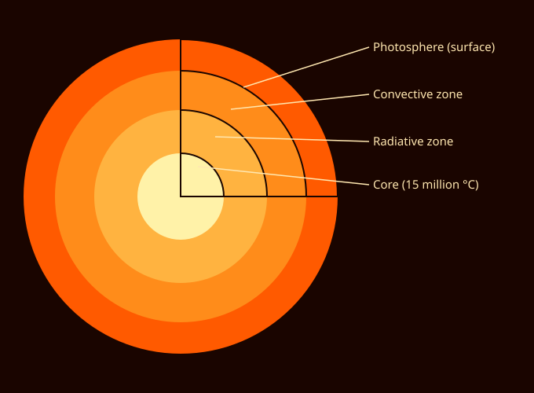

Our Star
The Sun is a giant ball of hot plasma made mostly of hydrogen and helium. Deep in its core, hydrogen atoms are fused into helium, releasing the energy that lights and warms every planet.
Without the Sun's light and heat there would be no weather, no seasons and no life on Earth.
Sun Facts
- Type of starA yellow dwarf (G-type main-sequence star) about 4.6 billion years old.
- SizeAbout 1.39 million km across, or roughly 109 Earths side by side.
- MassHolds about 99.8% of all the mass in the solar system.
- TemperatureAbout 5,500 °C at the surface and around 15 million °C in the core.
- Light travel timeSunlight takes about 8 minutes and 20 seconds to reach Earth.
- RotationThe Sun spins faster at its equator (about 25 days) than at its poles (about 35 days).
How Long Does Sunlight Take?
Light is the fastest thing in the universe, about 300,000 km every second, but space is huge. Pick a planet to see how old its sunlight is when it arrives.

Inside the Sun
Energy made in the core can take more than 100,000 years to work its way out through the radiative and convective zones before it escapes as sunlight.
In about 5 billion years the Sun will run low on hydrogen, swell into a red giant, and eventually shrink into a small, dim white dwarf.